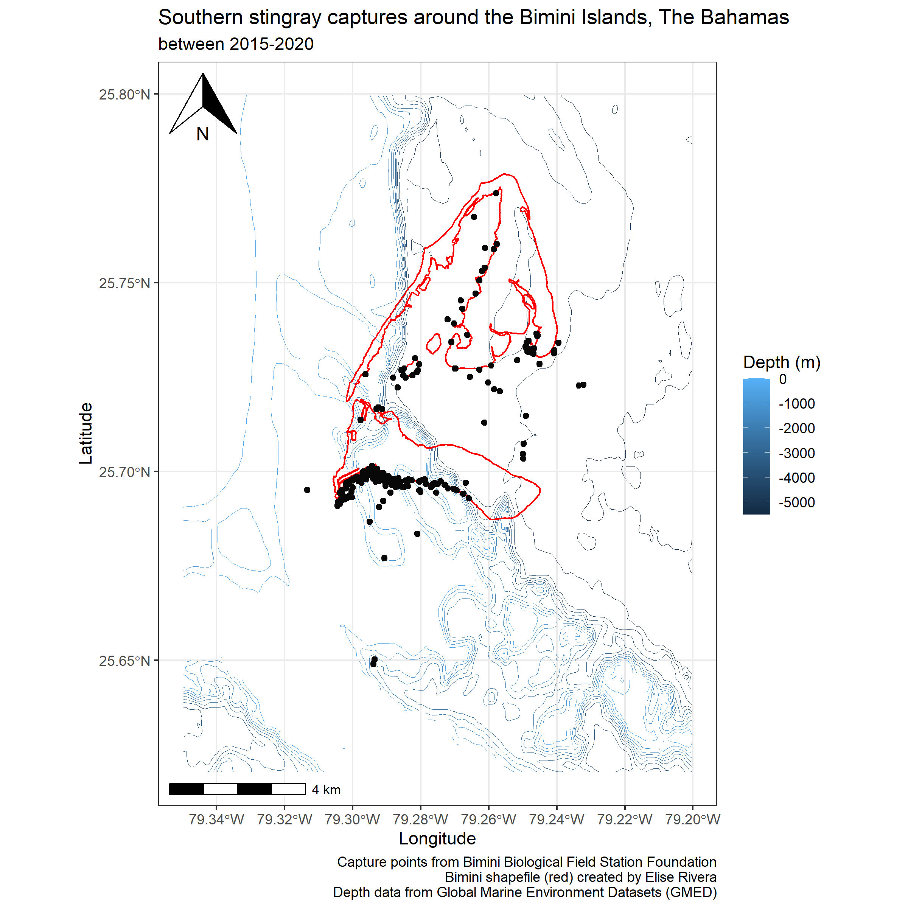

Southern stingray (Hypanus americanus) growth rates in Bimini Islands, The Bahamas from 2015-2020
EVR 628 Final Report
Introduction
This document serves as a summary of skills learned and practiced in the Data Management and Visualization course (EVR 628) taught by Dr. Villasenor-Derbez at the University of Miami during the Fall 2025 semester. The data processing and visualization compiled here were performed across various assignments throughout the semester.
Objectives
The aim of this project is to use southern stingray (Hypanus americanus) recapture data from the Bimini Biological Field Station in The Bahamas to ultimately calculate von Bertalanffy growth parameters for later publication.
Data Sources
Southern stingray capture data was collected by staff and volunteer researchers affiliated with the Bimini Biological Field Station Foundation, including Elise Rivera. Raw data is organized as one observation per capture event, and includes capture location data, various body measurements, PIT tag number, sex, and date data.
Captures occurred between 2015-2020 and include 301 unique individuals, 90 of which were captured at least 2 times. The raw data contains 483 observations and 17 columns. For the purposes of this project, we were most interested in the following columns:
date (in yyyy-mm-dd format)
disc width (cm, numeric)
PIT tag (character)
sex (character)
The raw data can be found in the portfolio/data/raw folder.
Data Processing
In the raw data, each row represents one capture event, while in the cleaned data, each row represents one individual stingray.
First, raw capture data was cleaned. This included exclusion of individuals that had only been captured once, removal of NAs, as well as the removal of captures between the first and last capture for individuals captured more than two times throughout the study period, or captures that were performed by visiting research groups with unknown or non-standardized measurement methods.
Next, a new dataframe was created using only the first and last recorded capture for each individual, resulting in one observation per individual. Rays that showed negative growth were removed, as well as rays which were captured less than 90 days apart to account for potential measuring error.
Lastly, change in disc width and change in date columns were used to calculate growth rate in cm/year for each individual.
Functions used for data processing include clean_names(), filter(), select(), group_by(), arrange(), mutate(), and merge(). These functions are found in the tidyverse and janitor packages. The corresponding script can be found in the portfolio/scripts/01_processing folder.
Main Findings
The figures presented here show the capture locations of all rays in the data, including single and recaptured individuals (Figure 1). Figure 2 shows the relationship between disc width at first capture (cm) and growth rate (cm/year). While it is difficult to see a pattern in the relationship for males due to a small sample size, females seem to show that growth rate decreases as disc width increases. This could indicate that growth occurs more rapidly in smaller, younger, southern stingrays than larger, older stingrays.
Both figures were created using the ggplot2 package. Figure 2 also required use of functions from the cowplot package. The scripts used to create these figures can be found in the portfolio/scripts folder.
Capture Locations

Growth Rate
The number of individuals captured at least twice and used for growth calculations was 63 (57 females and 6 males)

References
Firke S (2024). janitor: Simple Tools for Examining and Cleaning Dirty Data. doi:10.32614/CRAN.package.janitor https://doi.org/10.32614/CRAN.package.janitor, R package version 2.2.1, https://CRAN.R-project.org/package=janitor.
Wickham H, Averick M, Bryan J, Chang W, McGowan LD, François R, Grolemund G, Hayes A, Henry L, Hester J, Kuhn M, Pedersen TL, Miller E, Bache SM, Müller K, Ooms J, Robinson D, Seidel DP, Spinu V, Takahashi K, Vaughan D, Wilke C, Woo K, Yutani H (2019). “Welcome to the tidyverse.” Journal of Open Source Software, 4(43), 1686. doi:10.21105/joss.01686 https://doi.org/10.21105/joss.01686.
Wickham H. ggplot2: Elegant Graphics for Data Analysis. Springer-Verlag New York, 2016.
Wilke C (2025). cowplot: Streamlined Plot Theme and Plot Annotations for ‘ggplot2’. doi:10.32614/CRAN.package.cowplot https://doi.org/10.32614/CRAN.package.cowplot, R package version 1.2.0, https://CRAN.R-project.org/package=cowplot.